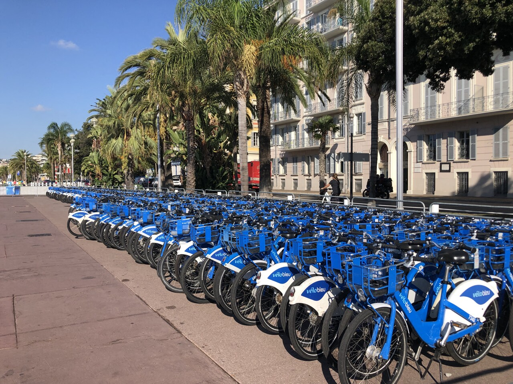

Étude des transports non polluants : le cas de VéloBleu

Présentation globale
Nom : VéloBleu
Statut : Service public de vélos en libre-service
Création : 2009
Propriétaire : Métropole Nice Côte d’Azur
Gestion : Par délégation (Keolis puis RLA depuis
2018)
Zone couverte : Nice, Saint-Laurent-du-Var,
Cagnes-sur-Mer
Nombre de vélos : environ 1 750 (mécaniques +
électriques)
Nombre de stations : environ 175 stations
Historique rapide
VéloBleu est lancé en 2009 par la Métropole Nice Côte d’Azur pour
encourager les mobilités douces. Le service s’est modernisé avec
l’arrivée des vélos électriques « e-VéloBleu » et d’une application
mobile. Depuis 2018, la Régie Ligne d’Azur assure sa gestion.
Particularités
Service 100% public
Objectif : réduire la pollution et favoriser la mobilité douce
Accessibilité économique (tarifs bas)
Aucune émission directe de CO₂
Importance économique dans la Métropole
VéloBleu joue un rôle majeur dans la mobilité non polluante à Nice :
Plus d’1 million de trajets par an
Réduction importante des trajets en voiture
Soutien aux commerces de proximité (accès rapide sans voiture)
Valorisation touristique (ville plus agréable pour les visiteurs)
Contribution économique directe
Création d’emplois dans la maintenance et redistribution des vélos
Budget annuel de fonctionnement : environ 3 à 4 M€
Investissements réguliers dans l’achat de vélos et de stations
Contribution indirecte
Diminution des embouteillages (trajets courts remplacés par le vélo)
Amélioration de la qualité de l’air → baisse des coûts de santé
Amélioration de l’image environnementale de la ville
Retour d’expérience et limites du service
1) Lancement du service e-VéloBleu
450 vélos électriques annoncés lors du lancement
Autonomie environ 50 km, assistance jusqu’à 25 km/h
Cadre aluminium, freins à disque, éclairage intégré
2) Problèmes constatés
Disponibilité réelle beaucoup plus faible : ~150 à 200 vélos seulement
Pannes fréquentes, batteries défaillantes
Poids élevé des vélos → difficile à utiliser sans assistance
Application mobile parfois incapable de finaliser la location
Stationnement anarchique dans certaines zones
3) Limites du free-floating
Dépôt aléatoire des vélos dans l’espace public
Difficulté de retrouver des vélos disponibles
Nécessité de camions pour redistribuer → coût supplémentaire
Risque accru de vandalisme
4) Arrêt du service électrique (2024)
Le service e-VéloBleu a été officiellement arrêté le 20 février 2024 en
raison de problèmes techniques persistants, du manque de disponibilité
et de coûts d’entretien élevés. Le système de vélos électriques sera
remplacé par un nouveau dispositif à définir par la Métropole.
Tarification actuelle
Abonnement annuel classique : 40 €
Abonnement étudiant : 20–25 €
Location longue durée vélo électrique : 25 € / mois
Location courte durée :
1 jour : ~1 €
7 jours : ~5 €
30 premières minutes gratuites : incitation
écologique et économique
Structure économique
Revenus
Abonnements : 1 à 2 M€ / an
Publicité sur les stations et vélos : 150 000 à 300
000 € / an
Total des revenus : environ 2 M€ / an
Dépenses
Poste
Montant estimé
% du total
Maintenance stations + vélos
1,5 M€
40%
Achat de nouveaux vélos
200–500 k€
15%
Personnel (techniciens + logistique)
1 M€
30%
Batteries + électronique
300 k€
10%
Application + serveurs
100 k€
5%
Déficit annuel compensé par la Métropole : ~1 M€
Taux d'utilisation de transports non polluants
Taux de mobilité douce
100% des trajets VéloBleu = 0 émission CO₂
1 million de trajets non polluants / an
23% de la mobilité douce totale à Nice (avec vélos personnels)
Taux global de mobilité non polluante : 100% pour
VéloBleu.
Impact économique du non-polluant
0 carburant → économies majeures pour les usagers
Coût énergétique quasi nul (pas d’électricité pour les vélos
mécaniques)
Réduction pollution : ≈ 300 tonnes de CO₂ évitées par an
Réduction du bruit → amélioration qualité de vie
1 € investi = 3 € économisés en santé publique
Projections économiques
Si le parc VéloBleu passe à 50% électrique :
Augmentation de l'utilisation : +20% estimé
Coût supplémentaire : 900 000 € pour 500 vélos électriques
Baisse de la voiture pour trajets courts : -10%
">
Améliorations déjà mises en place
1) Introduction des vélos électriques
Vélos adaptés aux pentes de Nice
Plus de trajets → mobilité douce renforcée
2) Application mobile modernisée
Localisation en temps réel
Paiement simplifié
Statistiques d’utilisation
3) Développement des pistes cyclables
10 km ajoutés entre 2018 et 2024
Sécurité accrue pour les cyclistes
4) Stations reparties stratégiquement
Gares, tram, bus, plages, hyper-centre
Évite l’usage de la voiture pour les trajets courts
Améliorations non polluantes proposées
1) Ajouter 500 vélos électriques
Coût : 1 800 € × 500 = 900 000 €
Impact : +20% d’utilisation
2) Ajouter 50 stations
Coût : 25 000 € / station → total = 1,25 M€
3) 10 km de nouvelles pistes cyclables
Coût : 200 000 € / km → total = 2 M€
4) Gratuité pour les moins de 18 ans
Coût : 50–80 k€ / an
Impact environnemental
0 émission → mode de transport le plus propre
Remplacement des trajets voiture courts (les plus polluants)